- 00 开篇词 为什么大厂面试必考操作系统？.md.html
- 00 课前必读 构建知识体系，可以这样做！.md.html
- 01 计算机是什么：“如何把程序写好”这个问题是可计算的吗？.md.html
- 02 程序的执行：相比 32 位，64 位的优势是什么？（上）.md.html
- 03 程序的执行：相比 32 位，64 位的优势是什么？（下）.md.html
- 04 构造复杂的程序：将一个递归函数转成非递归函数的通用方法.md.html
- 05 存储器分级：L1 Cache 比内存和 SSD 快多少倍？.md.html
- 05 (1) 加餐 练习题详解（一）.md.html
- 06 目录结构和文件管理指令：rm -rf 指令的作用是？.md.html
- 07 进程、重定向和管道指令：xargs 指令的作用是？.md.html
- 08 用户和权限管理指令： 请简述 Linux 权限划分的原则？.md.html
- 09 Linux 中的网络指令：如何查看一个域名有哪些 NS 记录？.md.html
- 10 软件的安装： 编译安装和包管理器安装有什么优势和劣势？.md.html
- 11 高级技巧之日志分析：利用 Linux 指令分析 Web 日志.md.html
- 12 高级技巧之集群部署：利用 Linux 指令同时在多台机器部署程序.md.html
- 12 (1)加餐 练习题详解（二）.md.html
- 13 操作系统内核：Linux 内核和 Windows 内核有什么区别？.md.html
- 14 用户态和内核态：用户态线程和内核态线程有什么区别？.md.html
- 15 中断和中断向量：Javajs 等语言为什么可以捕获到键盘输入？.md.html
- 16 WinMacUnixLinux 的区别和联系：为什么 Debian 漏洞排名第一还这么多人用？.md.html
- 16 (1)加餐 练习题详解（三）.md.html
- 17 进程和线程：进程的开销比线程大在了哪里？.md.html
- 18 锁、信号量和分布式锁：如何控制同一时间只有 2 个线程运行？.md.html
- 19 乐观锁、区块链：除了上锁还有哪些并发控制方法？.md.html
- 20 线程的调度：线程调度都有哪些方法？.md.html
- 21 哲学家就餐问题：什么情况下会触发饥饿和死锁？.md.html
- 22 进程间通信： 进程间通信都有哪些方法？.md.html
- 23 分析服务的特性：我的服务应该开多少个进程、多少个线程？.md.html
- 23 (1)加餐 练习题详解（四）.md.html
- 24 虚拟内存 ：一个程序最多能使用多少内存？.md.html
- 25 内存管理单元： 什么情况下使用大内存分页？.md.html
- 26 缓存置换算法： LRU 用什么数据结构实现更合理？.md.html
- 27 内存回收上篇：如何解决内存的循环引用问题？.md.html
- 28 内存回收下篇：三色标记-清除算法是怎么回事？.md.html
- 28 (1)加餐 练习题详解（五）.md.html
- 29 Linux 下的各个目录有什么作用？.md.html
- 30 文件系统的底层实现：FAT、NTFS 和 Ext3 有什么区别？.md.html
- 31 数据库文件系统实例：MySQL 中 B 树和 B+ 树有什么区别？.md.html
- 32 HDFS 介绍：分布式文件系统是怎么回事？.md.html
- 32 (1)加餐 练习题详解（六）.md.html
- 33 互联网协议群（TCPIP）：多路复用是怎么回事？.md.html
- 34 UDP 协议：UDP 和 TCP 相比快在哪里？.md.html
- 35 Linux 的 IO 模式：selectpollepoll 有什么区别？.md.html
- 36 公私钥体系和网络安全：什么是中间人攻击？.md.html
- 36 (1)加餐 练习题详解（七）.md.html
- 37 虚拟化技术介绍：VMware 和 Docker 的区别？.md.html
- 38 容器编排技术：如何利用 K8s 和 Docker Swarm 管理微服务？.md.html
- 39 Linux 架构优秀在哪里.md.html
- 40 商业操作系统：电商操作系统是不是一个噱头？.md.html
- 40 (1)加餐 练习题详解（八）.md.html
- 41 结束语 论程序员的发展——信仰、选择和博弈.md.html
28 内存回收下篇：三色标记-清除算法是怎么回事？
今天我们继续讨论内存回收问题。在上一讲，我们发现双色标记-清除算法有一个明显的问题，如下图所示：
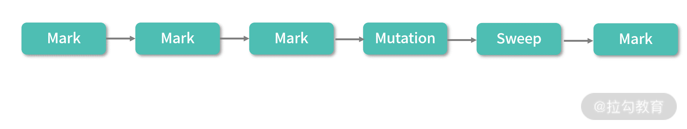
你可以把 GC 的过程看作标记、清除及程序不断对内存进行修改的过程，分成 3 种任务：
- 标记程序（Mark）
- 清除程序（Sweep）
- 变更程序（Mutation）
标记（Mark）就是找到不用的内存，清除（Sweep）就是回收不用的资源，而修改（Muation）则是指用户程序对内存进行了修改。通常情况下，在 GC 的设计中，上述 3 种程序不允许并行执行（Simultaneously）。对于 Mark、Sweep、Mutation 来说内存是共享的。如果并行执行相当于需要同时处理大量竞争条件的手段，这会增加非常多的开销。当然你可以开多个线程去 Mark、Mutation 或者 Sweep，但前提是每个过程都是独立的。
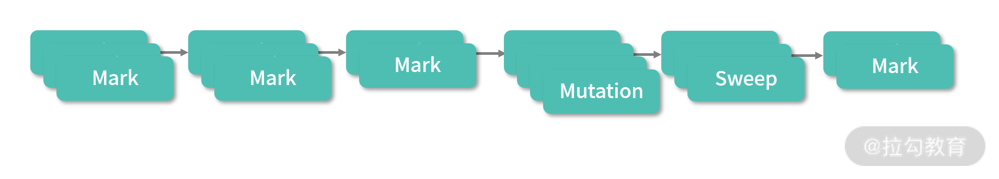
因为 Mark 和 Sweep 的过程都是 GC 管理，而 Mutation 是在执行应用程序，在实时性要求高的情况下可以允许一边 Mark，一边 Sweep 的情况； 优秀的算法设计也可能会支持一边 Mark、一边 Mutation 的情况。这种算法通常使用了 Read On Write 技术，本质就是先把内存拷贝一份去 Mark/Sweep，让 Mutation 完全和 Mark 隔离。
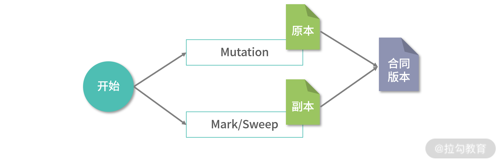
上图中 GC 开始后，拷贝了一份内存的原本，进行 Mark 和 Sweep，整理好内存之后，再将原本中所有的 Mutation 合并进新的内存。 这种算法设计起来会非常复杂，但是可以保证实时性 GC。
上图的这种 GC 设计比较少见，通常 GC 都会发生 STL（Stop The World）问题，Mark/Sweep/Mutation 只能够交替执行。也就是说， 一种程序执行的时候，另一种程序必须停止。
对于双色标记-清除算法，如果 Mark 和 Sweep 之间存在 Mutation，那么 Mutation 的伤害是比较大的。比如 Mutation 新增了一个白色的对象，这个白色的对象就可能会在 Sweep 启动后被清除。当然也可以考虑新增黑色的对象，这样对象就不会在 Sweep 启动时被回收。但是会发生下面这个问题，如下图所示：
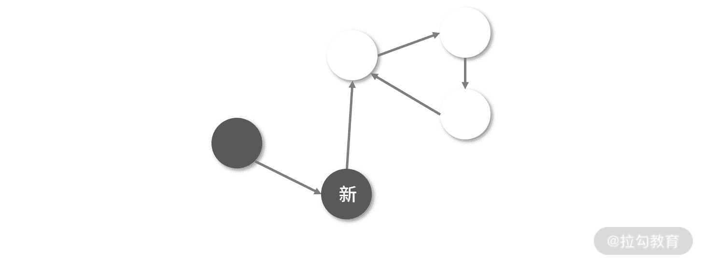
如果一个新对象指向了一个已经删除的对象，一个新的黑色对象指向了一个白色对象，这个时候 GC 不会再遍历黑色对象，也就是白色的对象还是会被清除。因此，我们希望创建一个在并发环境更加稳定的程序，让 Mark/Mutation/Sweep 可以交替执行，不用特别在意它们之间的关联。
有一个非常优雅地实现就是再增加一种中间的灰色，把灰色看作可以增量处理的工作，来重新定义白色的含义。
三色标记-清除算法（Tri-Color Mark Sweep）
接下来，我会和你讨论这种有三个颜色标记的算法，通常称作三色标记-清除算法。首先，我们重新定义黑、白、灰三种颜色的含义：
- 白色代表需要 GC 的对象；
- 黑色代表确定不需要 GC 的对象；
- 灰色代表可能不需要 GC 的对象，但是还未完成标记的任务，也可以认为是增量任务。
在三色标记-清除算法中，一开始所有对象都染成白色。初始化完成后，会启动标记程序。在标记的过程中，是可以暂停标记程序执行 Mutation。
算法需要维护 3 个集合，白色集合、黑色集合、灰色集合。3 个集合是互斥的，对象只能在一个集合中。执行之初，所有对象都放入白色集合，如下图所示：
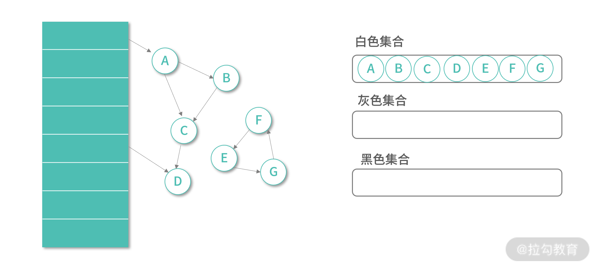
第一次执行，算法将 Root 集合能直接引用的对象加入灰色集合，如下图所示：
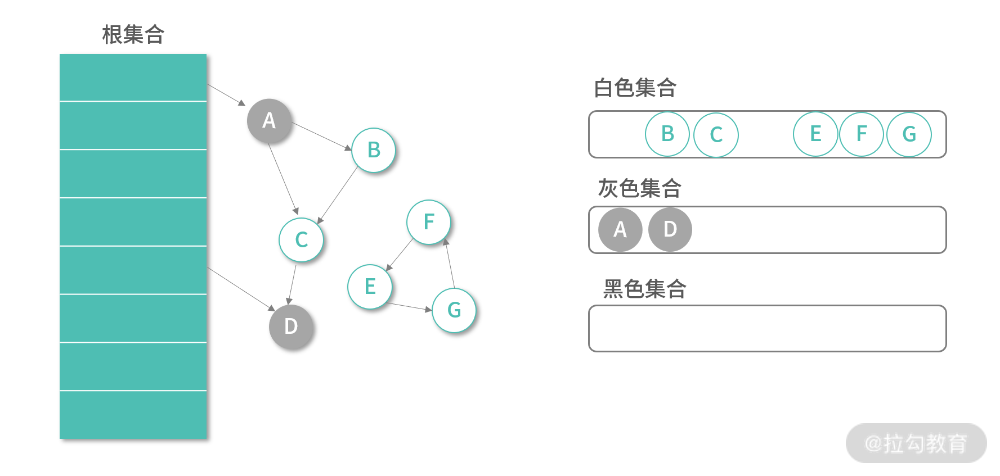
接下来算法会不断从灰色集合中取出元素进行标记，主体标记程序如下：
while greySet.size() > 0 {
var item = greySet.remove();
mark(item);
}
标记的过程主要分为 3 个步骤：
- 如果对象在白色集合中，那么先将对象放入灰色集合；
- 然后遍历节点的所有的引用对象，并递归所有引用对象；
- 当一个对象的所有引用对象都在灰色集合中，就把这个节点放入为黑色集合。
伪代码如下：
func mark(obj) {
if obj in whiteSet {
greySet.add(obj)
for v in refs(obj) {
mark(v)
}
greySet.remove(obj)
blackSet.add(obj)
}
}
你可以观察下上面的程序，这是一个 DFS 的过程。如果多个线程对不同的 Root Object 并发执行这个算法，我们需要保证 3 个集合都是线程安全的，可以考虑利用 ConcurrentSet（这样性能更好），或者对临界区上锁。并发执行这个算法的时候，如果发现一个灰色节点说明其他线程正在处理这个节点，就忽略这个节点。这样，就解决了标记程序可以并发执行的问题。
当标记算法执行完成的时候，所有不需要 GC 的元素都会涂黑：
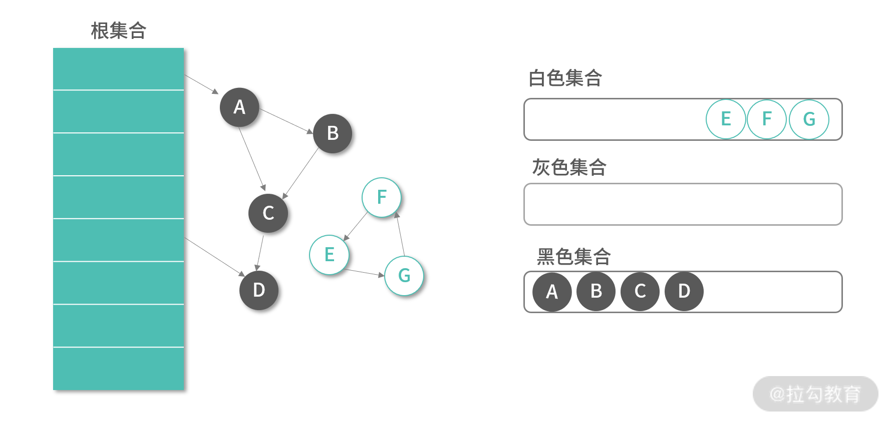 标记算法完成后，白色集合内就是需要回收的对象。
以上，是类似双色标记-清除算法的全量 GC 程序，我们从 Root 集合开始遍历，完成了对所有元素的标记（将它们放入对应的集合）。
接下来我们来考虑增加 GC（Incremental GC）的实现。首先对用户的修改进行分类，有这样 3 类修改（Mutation）需要考虑：
- 创建新对象
- 删除已有对象
- 调整已有引用
如果用户程序创建了新对象，可以考虑把新对象直接标记为灰色。虽然，也可以考虑标记为黑色，但是标记为灰色可以让 GC 意识到新增了未完成的任务。比如用户创建了新对象之后，新对象引用了之前删除的对象，就需要重新标记创建的部分。
如果用户删除了已有的对象，通常做法是等待下一次全量 Mark 算法处理。下图中我们删除了 Root Object 到 A 的引用，这个时候如果把 A 标记成白色，那么还需要判断是否还有其他路径引用到 A，而且 B,C 节点的颜色也需要重新计算。关键的问题是，虽然可以实现一个基于 A 的 DFS 去解决这个问题，但实际情况是我们并不着急解决这个问题，因为内存空间往往是有富余的。
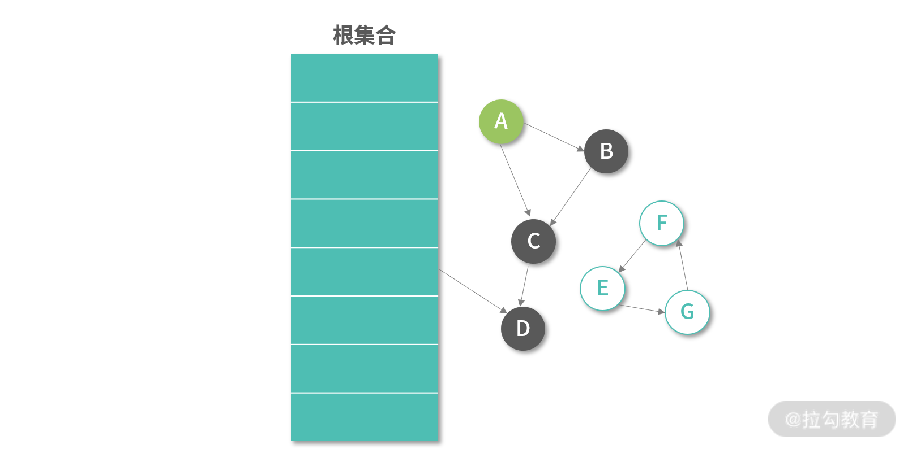
在调整已有的引用关系时，三色标记算法的表现明显更好。下图是对象 B 将对 C 的引用改成了对 F 的引用，C,F 被加入灰色集合。接下来 GC 会递归遍历 C,F，最终然后 F,E,G 都会进入灰色集合。
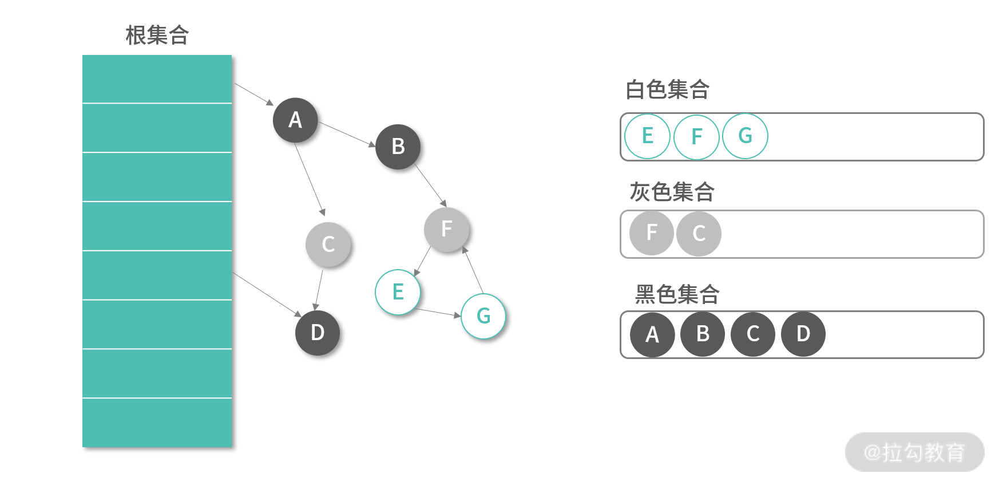
内存回收就好比有人在随手扔垃圾，清洁工需要不停打扫。如果清洁工能够跟上人们扔垃圾的速度，那么就不需要太多的 STL（Stop The World）。如果清洁工跟不上扔垃圾的速度，最终环境就会被全部弄乱，这个时候清洁工就会要求“Stop The World”。三色算法的优势就在于它支持多一些情况的 Mutation，这样能够提高“垃圾”被并发回收的概率。
目前的 GC 主要都是基于三色标记算法。 至于清除算法，有原地回收算法，也有把存活下来的对象（黑色对象）全部拷贝到一个新的区域的算法。
碎片整理和生代技术
三色标记-清除算法，还没有解决内存回收产生碎片的问题。通常，我们会在三色标记-清除算法之上，再构建一个整理内存（Compact）的算法。如下图所示：
 Compact 算法将对象重新挤压到一起，让更多空间可以被使用。我们在设计这个算法时，观察到了一个现象：新创建出来的对象，死亡（被回收）概率会更高，而那些已经存在了一段时间的对象，往往更不容易死亡。这有点类似 LRU 缓存，其实是一个概率问题。接下来我们考虑针对这个现象进行优化。
Compact 算法将对象重新挤压到一起，让更多空间可以被使用。我们在设计这个算法时，观察到了一个现象：新创建出来的对象，死亡（被回收）概率会更高，而那些已经存在了一段时间的对象，往往更不容易死亡。这有点类似 LRU 缓存，其实是一个概率问题。接下来我们考虑针对这个现象进行优化。
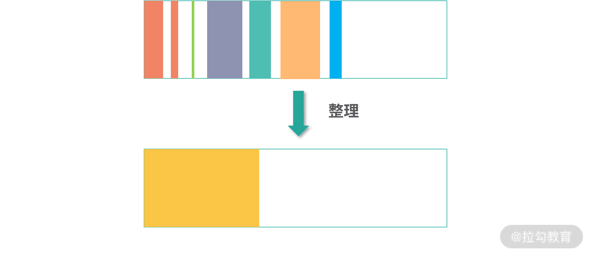
如上图所示，你可以把新创建的对象，都先放到一个统一的区域，在 Java 中称为伊甸园（Eden）。这个区域因为频繁有新对象死亡，因此需要经常 GC。考虑整理使用中的对象成本较高，因此可以考虑将存活下来的对象拷贝到另一个区域，Java 中称为存活区（Survior）。存活区生存下来的对象再进入下一个区域，Java 中称为老生代。
上图展示的三个区域，Eden、Survior 及老生代之间的关系是对象的死亡概率逐级递减，对象的存活周期逐级增加。三个区域都采用三色标记-清除算法。每次 Eden 存活下来的对象拷贝到 Survivor 区域之后，Eden 就可以完整的回收重利用。Eden 可以考虑和 Survivor 用 1:1 的空间，老生代则可以用更大的空间。Eden 中全量 GC 可以频繁执行，也可以增量 GC 混合全量 GC 执行。老生代中的 GC 频率可以更低，偶尔执行一次全量的 GC。
GC 的选择
最后我们来聊聊 GC 的选择。通常选择 GC 会有实时性要求（最大容忍的暂停时间），需要从是否为高并发场景、内存实际需求等维度去思考。在选择 GC 的时候，复杂的算法并不一定更有效。下面是一些简单有效的思考和判断。
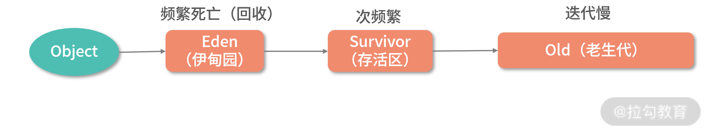
- 如果你的程序内存需求较小，GC 压力小，这个时候每次用双色标记-清除算法，等彻底标记-清除完再执行应用程序，用户也不会感觉到多少延迟。双色标记-清除算法在这种场景可能会更加节省时间，因为程序简单。
- 对于一些对暂停时间不敏感的应用，比如说数据分析类应用，那么选择一个并发执行的双色标记-清除算法的 GC 引擎，是一个非常不错的选择。因为这种应用 GC 暂停长一点时间都没有关系，关键是要最短时间内把整个 GC 执行完成。
- 如果内存的需求大，同时对暂停时间也有要求，就需要三色标记清除算法，让部分增量工作可以并发执行。
- 如果在高并发场景，内存被频繁迭代，这个时候就需要生代算法。将内存划分出不同的空间，用作不同的用途。
- 如果实时性要求非常高，就需要选择专门针对实时场景的 GC 引擎，比如 Java 的 Z。
当然，并不是所有的语言都提供多款 GC 选择。但是通常每个语言都会提供很多的 GC 参数。这里也有一些最基本的思路，下面我为你介绍一下。
如果内存不够用，有两种解决方案。一种是降低吞吐量——相当于 GC 执行时间上升；另一种是增加暂停时间，暂停时间较长，GC 更容易集中资源回收内存。那么通常语言的 GC 都会提供设置吞吐量和暂停时间的 API。
如果内存够用，有的 GC 引擎甚至会选择当内存达到某个阈值之后，再启动 GC 程序。通常阈值也是可以调整的。因此如果内存够用，就建议让应用使用更多的内存，提升整体的效率。
总结
那么通过这节课的学习，你现在可以尝试来回答本节关联的 2 道面试题目：
- 如何解决内存的循环引用问题？
- 三色标记清除算法的工作原理？
【解析】 解决循环引用的问题可以考虑利用 Root Tracing 类的 GC 算法。从根集合利用 DFS 或者 BFS 遍历所有子节点，最终不能和根集合连通的节点都是需要回收的。
三色标记算法利用三种颜色进行标记。白色代表需要回收的节点；黑色代表不需要回收的节点；灰色代表会被回收，但是没有完成标记的节点。
初始化的时候所有节点都标记为白色，然后利用 DFS 从 Root 集合遍历所有节点。每遍历到一个节点就把这个节点放入灰色集合，如果这个节点所有的子节点都遍历完成，就把这个节点放入黑色的集合。最后白色集合中剩下的就是需要回收的元素。